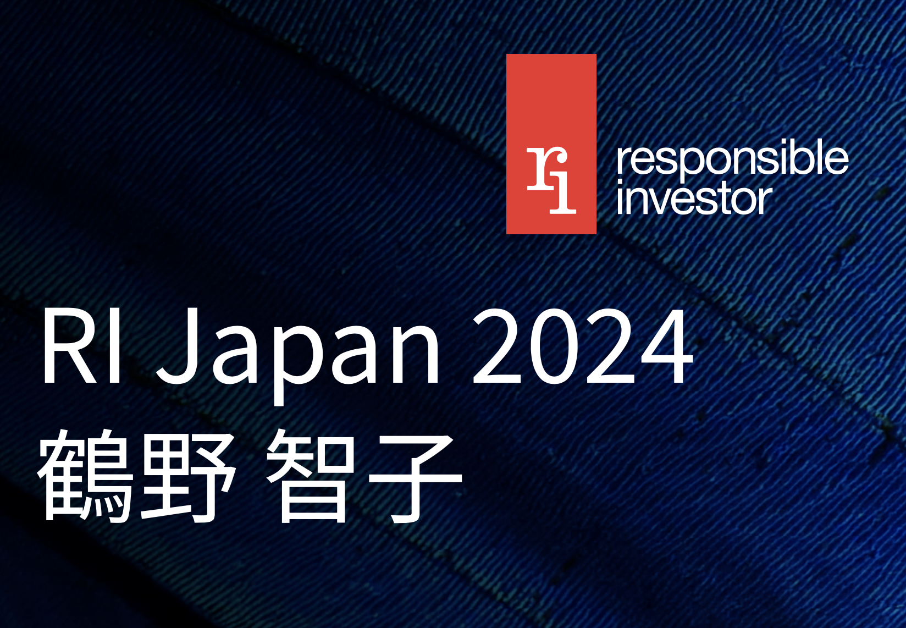

i-SMA理事の鶴野が、RI Japan 2024（Responsible Investor Japan 2024）に登壇いたしました。

- イベント名
- RI Japan 2024（Responsible Investor Japan 2024）
- 開催日時
- 2024年5月22日（水）〜23日（木）
- 会場
- 虎ノ門ヒルズフォーラム（東京）
- 登壇者
- 鶴野智子（i-SMA理事、CSRデザイン環境投資顧問）
- 登壇形式
- パネルディスカッション パネラー
RI Japan 2024は、責任投資をテーマとした日本の主要カンファレンスです。i-SMA理事の鶴野智子が、サステナビリティ情報の開示保証に関するパネルディスカッションにパネラーとして登壇しました。
詳細はRI Japanの公式サイトをご確認ください。